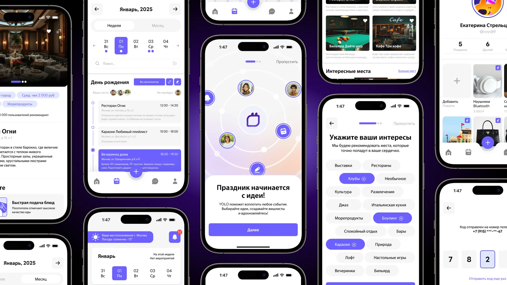
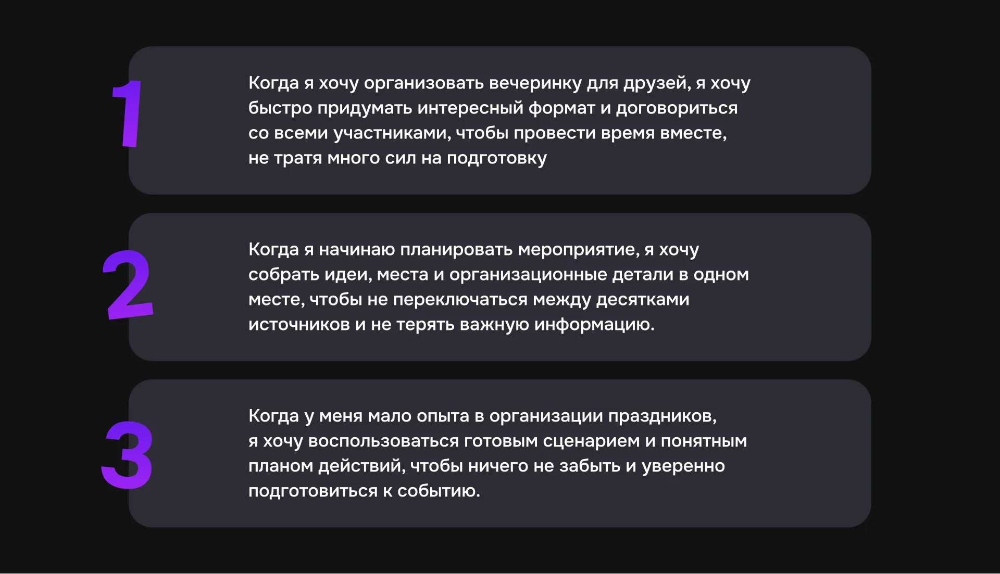
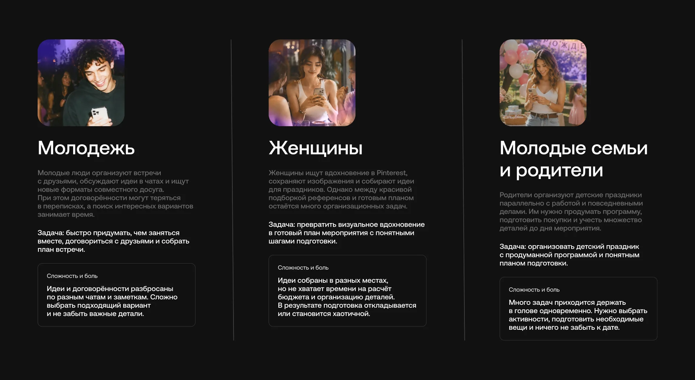
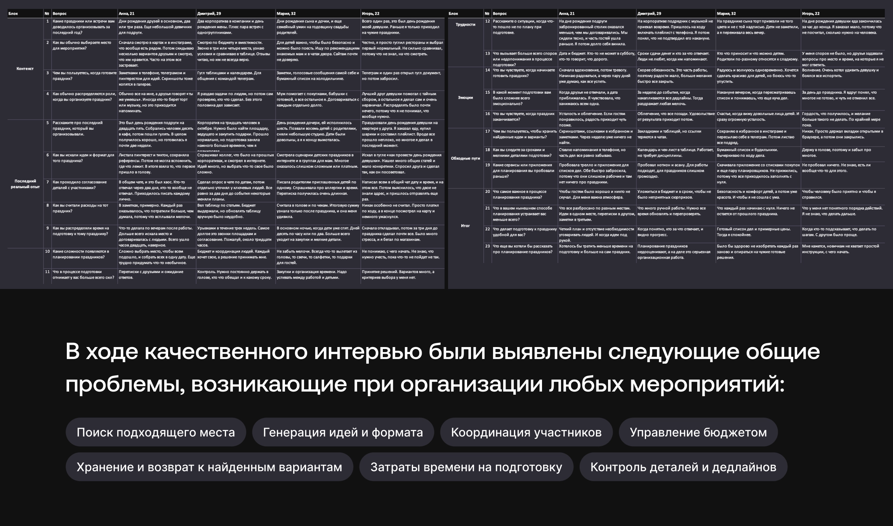
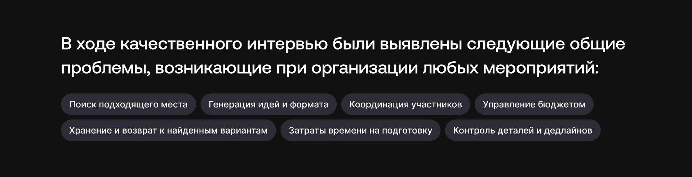
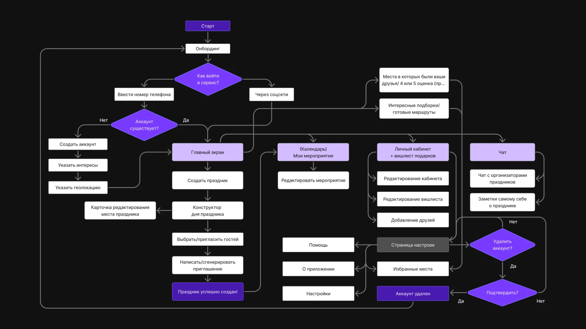
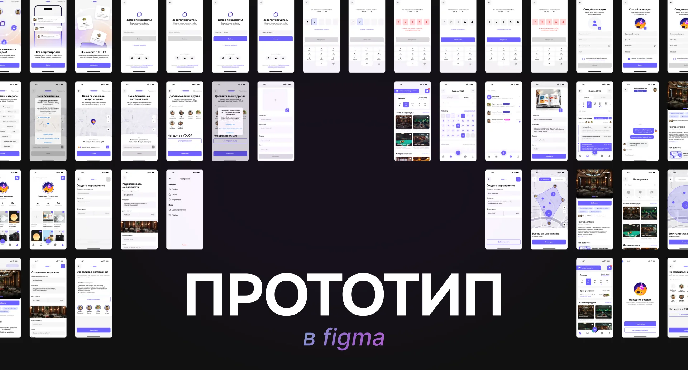
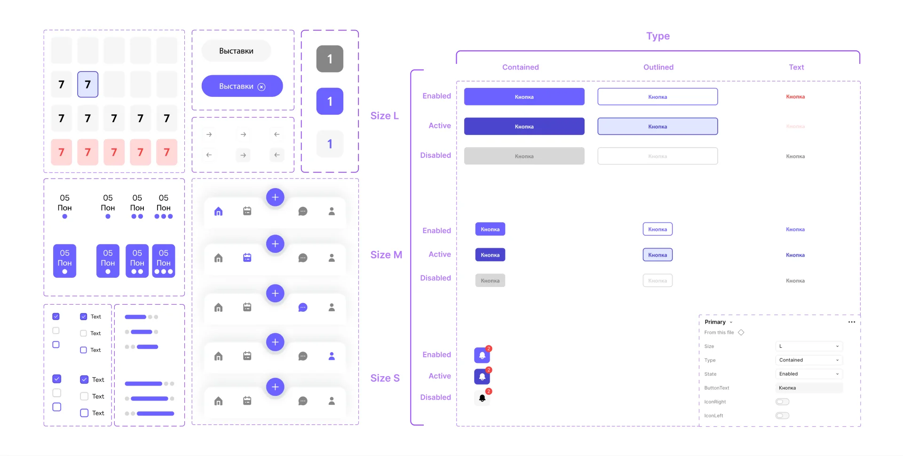
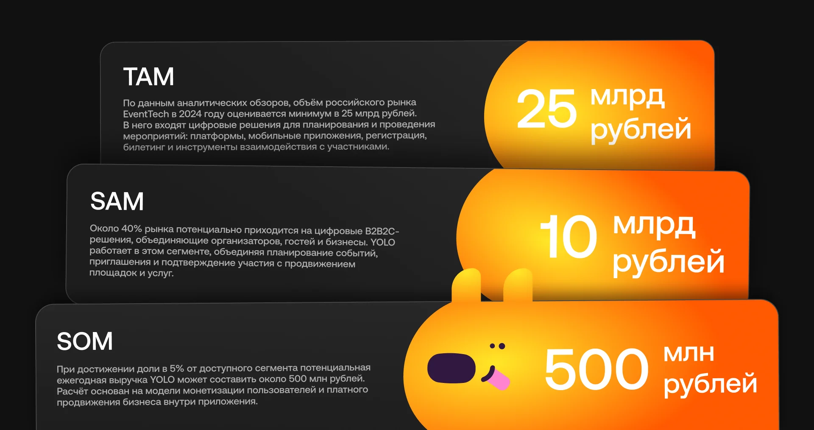

YOLO мобильное приложение
Разработан для учебного курса ВШЭ. YOLO помогает быстро придумать идеи, спланировать детали и провести вечеринку, которая запомнится каждому. В приложении можно найти вдохновение, готовые сценарии и простые инструменты для организации. Время выполнения: 2 месяца.
Спроектировать UX/UI мобильного сервиса, который сокращает путь от идеи до организованного события и помогает пользователю без опыта собрать план вечеринки за 10–15 минут.
Исследование целевой аудитории, JTBD, User Story, разработка бренда, разработка UI KITа, рабочий прототип в Figma.

Гипотезы по JTBD
На старте исследования я сформулировала несколько гипотез о трудностях, которые могут возникать при организации мероприятия.
Эти предположения предстояло проверить в ходе интервью, а не принимать за подтвержденные пользовательские проблемы.

Целевая аудитория
На этапе исследования я выделила три потенциальных сегмента пользователей, которые могут сталкиваться с трудностями при организации мероприятий.
- Молодые люди. Организуют встречи с друзьями, ищут идеи для совместного досуга и координируют участников через переписки. Хотят быстро договориться обо всем и придумать что-то интереснее обычных посиделок.
- Молодые родители. Готовят детские праздники параллельно с работой и повседневными делами. Им важно продумать программу, покупки и бюджет, не упустив детали.
- Люди, которым важно визуальное вдохновение. Собирают референсы и идеи, но испытывают сложности при переходе к практической подготовке. Хотят превратить вдохновение в конкретный план мероприятия.

Метод и участники исследования
Чтобы лучше понять реальный опыт организации мероприятий, я провела качественные интервью с четырьмя респондентами.
В ходе бесед изучала, как участники придумывают формат события, выбирают место, договариваются с гостями и контролируют подготовку. Ответы были собраны и проанализированы в общей таблице. Это позволило сопоставить опыт участников, выделить повторяющиеся трудности и определить задачи, которые могут стать основой функциональности YOLO.

Вывод после интервью
В ответах респондентов повторялись сложности, связанные с несколькими этапами организации мероприятий:
- Поиск подходящего места и сравнение вариантов.
- Генерация идей и выбор формата события.
- Координация участников и согласование деталей.
- Планирование и контроль бюджета.
- Сохранение и повторное использование найденных вариантов.
- Большие временные затраты на подготовку.
- Контроль организационных задач и сроков.
Эти наблюдения помогли определить основные направления, на которых стоит сосредоточиться при проектировании сервиса.

Проектирование User Flow
После исследования я собрала основной путь пользователя — от запуска приложения до готового плана вечеринки.
Я спроектировала логику экранов так, чтобы сократить путь от идеи до действия. Главный сценарий включает в себя онбординг, выбор повода (день рождения, встреча с друзьями), генерацию идей через свайпы и итоговый чек-лист с бюджетом. Такой флоу позволяет пользователю не теряться в переписках и принимать решения за пару минут.

Интерактивный прототип
Финальный UX/UI приложения, собранный в кликабельный прототип для тестирования
В прототипе я заложила все ключевые механики: свайп-подбор активностей, динамическое изменение чек-листа в зависимости от формата события, а также калькулятор для контроля бюджета.

Дизайн-система и UI Kit
Визуальный язык передает атмосферу праздника, но сохраняет ощущение порядка
Я разработала масштабируемую дизайн-систему. В основе крупные тактильные элементы для удобного использования одной рукой, яркая цветовая палитра для эмоционального вовлечения и библиотека компонентов (карточки, кнопки, модальные окна, состояния), которая позволяет быстро собирать новые экраны.

Аналитика и тестирование
Для оценки эффективности сценариев я собрала данные и проанализировала воронку
После сборки прототипа я проверила, как пользователи проходят путь от выбора идеи до создания события. Аналитика показала, что внедрение свайпов ускорило процесс выбора активностей в 2 раза по сравнению с классическим списком. Также метрики помогли выявить узкие места на экране оплаты, которые я сразу доработала.

Итоги проекта
Сервис закрывает главную потребность, экономит время и снижает тревогу перед организацией события.
В ходе работы я прошла путь от качественных интервью и болей пользователей до кликабельного продукта с аналитикой. Главный вывод: даже такой легкий и развлекательный продукт, как YOLO, требует серьезной аналитической базы. В будущем я вижу потенциал в интеграции с популярными сервисами бронирования и внедрении ИИ-помощника для генерации идей под конкретный бюджет.